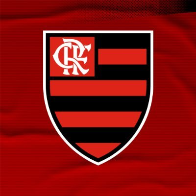
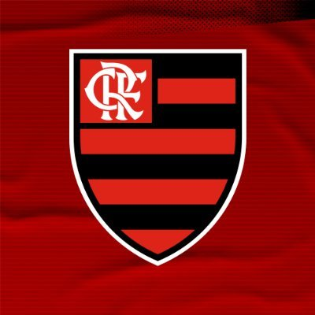

#Trybe - Portfolio
Alberto Fernandes Couto, 26 anos. Iúna - Espírito Santo
Turma 22 A - Trybe | CETESC - Professor de informática

Alberto Fernandes Couto, 26 anos. Iúna - Espírito Santo
Turma 22 A - Trybe | CETESC - Professor de informática
Me chamo Alberto e também sou conhecido como beto. Moro na região do caparaó do Espírito Santo, na cidade de Iúna.
Iúna é uma cidade bem pequena com aproximadamente 28 mil habitantes, conhecida pelas cachoeiras e pela produção de café!
Adoro minha cidade e suas belezas naturais! Sou completamente apaixonado por cachoeiras, praias e natureza!
Gosto de acampar e viajar! A ideia é sempre conhecer novos lugares e pessoas.
Amo ouvir música, passo boa parte do meu dia tomando café e ouvindo Pouya, kevin flun e nigthlovell Sou completamente viciado em assistir Anime, e meu desenho favorito é One Piece! Luffy é meu Herói. Gosto muito de esporte, futebol, basquete e mma são os meus favoritos. No futebol sou torcedor do flamengo e meu jogador favorito é o Messi e o Neymar. No basquete sou torcedor do LA Lakers e meu jogador favorito é o Lebron James e o Kirie Irving. E meu lutador favorito é o Charles do Bronx. Ele é muito brabo.
Sempre gostei de tecnologia e meu primeiro contato foi com jogos, Tibia e Counter-Striker quando criança. Sou Técnico em Informático formado em 2012 e recém formado em Licenciatura em Informática pelo Instituto Federal do Espírito Santo (IFES). Atualmente trabalho em uma escola com o foco em cursos de Enfermagens e sou professor de Informática nessa escola.
Sou aluno da turma 22 da Trybe, onde busco me formar como Desenvolvidor Web Full Stack e conquistar um trabalho remoto!
A experiência na trybe tem sido incrível e ao mesmo tempo muito puxado!
Mas nada que é bom vem de graça =)
Ningúem é tão grande que não possa aprender e nem tão pequeno que não possa ensinar.

 
